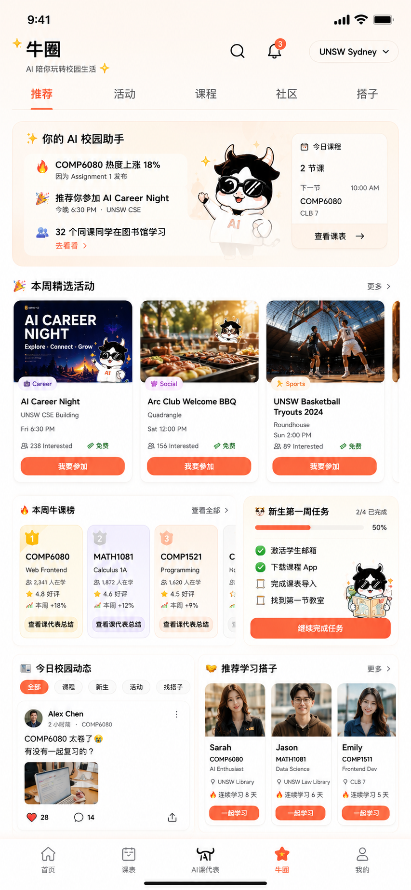

UniMate AI · App 设计稿参考 📐
UNIMATE AI · APP DESIGN REFERENCES
这 4 张是设计师产出的 App 视觉稿，给团队对齐 牛小匠 mascot 用法 / Coral 主色 / 排版调性 / 信息架构。 具体页面实现以产品 PRD 为准，UI 组件直接用 主品牌手册 的 token + 组件（
--um-*）。
首页 Home
Hero 区 「今天想学什么？」 + 牛小匠挥手 mascot（happy / studying 状态）+ 「问 AI」橙色 Coral CTA。 下方 5 个核心功能 pill（AI 助手 / 找课程 / 学习路径 / 备考复习 / 学习成就），用不同 wash 色区分。 🔥 热门课程 4 张课程卡（COMP1531 / COMP2521 / MATH1131 / COMM1111），右上角 emoji 区分学科 + 显示在学人数 / 周内 DDL 警告。学习进度 Lv.12 突出大数字（XP 进度条 + 时长/完成/正确率/AI 帮助次数 4 stats）。 大家都在问 Q&A 三条社区帖子，挂在科目标签下。
- Hero 区：studying（笔记本电脑前学习 + Let's study 便利贴）= 调性钩子
- 学习进度区：champion（戴学位帽）= 等级升级仪式感
- 大家都在问：Q 头像无 mascot，避免 mascot 视觉过载
app-design-refs/01-home.png

登录 / 注册 Auth
左屏「登录」：上半 Hero 区 mascot waving + Let's study 贴纸 + 「跳过」右上角小按钮。 登录方式 4 选 1：UNSW 学号登录（主 Coral CTA） / Google / Apple / 邮箱。底部 Discord + 微信 + 更多 3 个 social 圆形按钮。 右屏「注册」：UNSW 学号 (z1234567 占位)、邮箱、密码、确认密码 4 个 input； 勾选「我已阅读并同意 UniMate AI 的服务条款 与 隐私政策」+ 创建账号 Coral CTA。
- 「UNSW 学号登录」摆在最显眼位置 → 强化"我是给你们学校用的"心智锚
- Mascot 在 hero 区有 2 个不同动作（waving / studying with pencil）但 不同步骤分屏不冲突
- 背景大色块 hot pink 不规则形状 = UniMate sticker 美学（DESIGN.md §sticker）
app-design-refs/02-auth.png

选课情报局 Course Intel
UniMate 的"杀手级社区功能" — 由学生社区驱动的真实选课指南。
4 大 USP banner：匿名分享 / 投票互动 / 经验交流 / AI 总结。
8 张关联页：
1. 社区首页（本学期选课生存指南 hero / 4 入口 pill）
2. 水课排行榜（TOP 3 + 水滴数计票 + 牛小匠总结卡）
3. Tutor 评价列表（COMP6080 · 给分 / 友善度 / 回复速度 / 讲课质量 4 维度星级）
4. Tutor 详情页（综合评分大数字 4.6/5 + 标签云 + 学生评价匿名）
5. 投票广场（最水的课 / 最压分 Tutor / 最痛苦 Assignment 进行中）
6. 社区帖子列表（推荐 / 最新 / 关注 / 同专业 4 tab 切换）
7. 帖子详情（Tutor 吐槽 tag + 评论流 + 匿名 emoji 头像）
8. 个人中心（发布 12 / 评论 86 / 获赞 342 / 收藏 24 4 stats）
- "水滴"作为投票货币 = UniMate 独有 metaphor，不用通用 ❤️ / 👍
- Tutor 评分 4 维度（给分宽松 / 友善 / 回复速度 / 讲课清晰）= 学生真实关注点
- 牛小匠多以 thinking / studying / sprint 状态出现，覆盖"分析数据 / 学习中 / 冲刺投票"全场景
- 底部固定 Tab：首页 / 社区 / + (发帖 FAB Coral) / 消息 / 我的
app-design-refs/03-course-intel-community.png

核心 App 功能 Core App
9 个核心页面 + 底部 8 个 mascot 表情库。
1. 启动页（UniMate AI 牛小匠课代表 / Smarter Study, Better Future / 4 USP pill）
2. 首页 Hi Alex（DDL 倒计时大数字 12:36:58 + 今日任务 3 条 + 进度 68% + 今日 1 题）
3. 本周课表（5/6 周 / TUE 高亮 / 5 节课时间轴 lecture/tutorial/lab 不同色块）
4. AI 助手（牛小匠 + 嗨 Alex 👋 6 个快捷动作 pill：解释概念 / 解题思路 / 总结文章 / 生成 Quiz / 分析作业 / 学习计划）
5. 复习卡片（数据结构本周复习 5/20 已掌握 + 翻转卡 "栈是什么？" + 不熟悉 / 熟悉 二选一）
6. 即将到来的截止（紧急 4 / 重要 6 / 进行中 3 + 倒计时大数字 + DDL 守门员上线提醒）
7. DDL Widget（iOS 锁屏小组件 12:36:58 + 今日 1 题 + 桌面 Calendar/Photos/Camera icons）
8. 学习进度（68% 环形进度 + 周一到周日折线图 + 4 张成就徽章：7 天连学 / 早起学习 / 题目高手 / 时间管理）
9. 我的 / Profile（Plus 会员金标 + 1200 Credits + 6 个 nav item: 我的课程/学习记录/错题本/收藏夹/设置/反馈）
📦 牛小匠表情库（底部 8 个标准态）：
开心 happy / 学习中 studying / 思考中 thinking / AI 分析中 ai-analyzing / 冲刺！ sprint / 熬夜中 anxious / Deadline 警告 anxious 变体 / 满分拿下 passed
- 1 屏 1 表情，绝不冲突（DESIGN.md §3 红线）
- DDL 倒计时全部用 anxious / sprint 火焰款 = 紧迫感视觉化
- AI 助手用 ai-analyzing（扫描眼） = 计算中视觉锚
- 复习卡片用 studying（拿书） = 翻卡场景
- 个人中心用 happy（默认） = 不要给"我的"主页焦虑感
app-design-refs/04-core-features.png

学术风险救援站 Academic Rescue
UniMate 的"应急工具箱" — 留学生最焦虑的 3 个学术场景一站式解决，主入口品牌为
「牛小匠 · 学术风险救援站」，4 USP chips：更专业 / 更安心 / 更有底气 + Plus 会员升级解锁。
3 大功能模块（首页 3 张大卡，每张有进入箭头）：
1. 理解我的作业（Understand My Assignment）— 上传作业要求 / Rubric / 截图 → AI 一键拆解 + 明确重点 + 给出执行计划。支持 PDF / 图片 / Word / Canvas 链接。完成态 mascot："超详细，拆解越精准喔！"
2. 学术风险检测（Academic Risk Check）— Turnitin 官方 API + 4 多引擎备选（GPTZero / ZeroGPT / Copyleaks / Originality.ai）。23% 中等风险大数字（红绿带宽进度条）+ 4 维详情（文字相似性 18% / AI 生成 28% / 引用 12% / 内容一致 8%）+ 建议优化 + "优化建议 & 改写帮助" Coral CTA。
3. 学术危机救援（I Got an Academic Warning）— 收到学校警告信 / 指控信？上传通知 → AI 解读违规内容 / 匹配学校政策流程 / 提供应对策略 + 时间线 / 生成申诉信 / 准备听证会材料。底栏 mascot："牛小匠会陪你一步步度过难关！"
侧栏：快速工具 5 个 chip（申请延长 SC / 挂科救援 / GPA 计算器 / 签证&PR 预警 / 更多）+ Plus 会员卡（牛小匠戴王冠 mascot + "解锁全部救援工具" CTA）。
底部 4 USP banner：覆盖澳洲主流大学（UNSW/USYD/UQ/Monash/墨大等）· 权威检测支持（Turnitin 官方 API + 多引擎）· 专业学术团队（学长导师严格执行学校规则）· 隐私安全保障（数据加密存储 100% 不泄露）· 24/7 急救支持（关键时刻牛小匠在你身边）。
牛小匠状态小组件（首页底部 4 卡 + 进度条）：一切顺利 85% / 报文档检查一下 23% 风险 / 作业拆解完成 68% / 需要帮忙？紧急（4 种 mascot 状态打通救援动线）。
- 大数字驱动焦虑→可控：23% 风险分大字 + 颜色编码进度条，让用户秒懂"我现在在哪个安全档位"
- 3 大功能各有自己的 3-step 上传 → AI 分析 → 结果生成 流程，统一节奏
- Mascot 用法：拆解作业用 thinking + 放大镜，风险检测用 passed（戴学位帽点头），救援用 champion（戴王冠陪伴感）
- 救援 ≠ 包过：所有页面 footer 提示「检测结果仅供参考，不能保证与学校官方结果完全一致，请遵守所在学校的学术诚信政策」
- 跟"选课情报局" (ref-03) 是 UniMate 双杀手锏：选课前看情报局 / 出问题用救援站
app-design-refs/05-academic-risk-rescue.png

AI 导入课表 Timetable Import Beta
新生痛点：每学期开学手动一节节录入 5-6 门课时间表太烦。一键导入 + AI 智能识别 + 30 秒-1 分钟出周视图。
Hero 一句话："把课表交给我，小匠帮你安排好时间！" + mascot waving。
6 步流程：
1. 选择导入方式（4 种）：从学校系统导入（推荐 · 支持 UNSW / USYD / UQ 等）/ 上传课表文件（PDF / PNG / JPG / Excel）/ 粘贴课表文本（从邮箱/官方网站复制）/ 手动添加（少量课/临时调整）。底栏"我们仅用于识别课程信息，不会存储你的账号密码"安全承诺。
2. 连接学校系统：5 所学校（UNSW Sydney 推荐 / Sydney / UQ / Monash / Melbourne）+ 其他学校陆续支持。数据安全保障弹窗。
3. 选择学期：term selector "2024 年 第 1 学期 (Sem 1)" + 即将导入 stat 卡（预计课程数 4-6 门 / 预计时间 1 分钟内 / 数据来源 UNSW Timetable）+ "开始导入" Coral CTA。
4. AI 识别中：mascot 拿放大镜环形进度条 + "请稍候，通常需要 30 秒-1 分钟" + 4-step 进度：已连接学校系统 ✓ / 正在获取课程数据 ✓ / AI 识别课程信息（当前）/ 生成课表视图。
5. 检查并确认：3 大数字 stat（课程数 5 门 / 时间冲突 0 处 / 识别准确率 98%）+ 5 节课列表（COMP6080 / INFS3605 / MATH1131 / GENED1000 / COMP6841 各显示周几/时间/教室）+ "重新识别" / "确认导入" 双 CTA。
6. 导入成功：完整周视图日历（周一到周五 + 8AM-6PM + 5 节课不同色块块状显示）+ mascot "课表导入成功！加油学习呀！" + 添加课程 FAB。
底部 4 USP：快速便捷（1 分钟内告别手动输入）/ 智能识别（AI 精准识别课程·时间·地点 准确率 98%）/ 安全可靠（只获取课表信息保护隐私）/ 自动优化（检测时间冲突帮你优化）。
- 4 种导入方式按"自动 → 半自动 → 手动"梯度排，推荐用学校系统但有 fallback，照顾不同学校的可用性
- 第 4 屏 loading 不空着 — 放大镜 mascot + 4-step 进度给用户"有事在做"的反馈，覆盖 30s-1min 等待
- 第 5 屏导入完必须给用户确认环节，3 大数字直观（98% 准确率 + 0 冲突 + 5 课），不是 AI 黑盒一把梭
- 第 6 屏成功态用 周视图（非列表）给用户"哇 看起来真像课表"的成就感 — 跟 Apple Calendar 同款视觉锚
- UNSW 排第一 = UniMate 的 first-mover 校园，跟 ref-02 登录 UNSW 学号优先一致
app-design-refs/06-ai-timetable-import.png

牛圈 Campus Feed
UniMate 的"校园社交聚合 hub"—— 跟选课情报局 (ref-03 偏 Tutor 评分 / 选课) 完全不同，牛圈是把活动 / 热门课程 / 校园 UGC / 学习搭子混合的一站式 feed。底部 Tab Bar 中央 emphasis 是「AI 课代表」，「牛圈」是右起第二个 tab。
顶部 5 tabs：推荐（默认）/ 活动 / 课程 / 社区 / 搭子 + 学校切换器（UNSW Sydney ✓）。
5 大功能模块：
1. 你的 AI 校园助手（Hero）— mascot 挥手 + 3 智能推荐（COMP6080 本周热度 ↑23% / 推荐活动 AI Career Night / 3 位同学正在附近自习）+ 今日课程窗口
2. 🔥 本周精选活动 — 主 banner (AI Career Night 悉尼歌剧院夜景 256 人感兴趣) + 2 小卡（Study with Me / Food Truck Festival 进行中 / 报名中状态 chip）
3. 👑 本周牛课榜 — Top 3 课程（COMP6080 #1 ↑23% / MATH1081 #2 ↓5% / COMP1521 #3 ↑12%）+ 评分 + 在学人数 + "去看看" CTA
4. 新生第一周任务（3/5 已完成 60%）+ 今日校园动态（Lily Chen 学姐 UGC 帖："刚在图书馆捡到一张学生卡，失主请联系我~"）
5. 推荐学习搭子 — 3 个同学 cards（Jessica Wu COMP6080 研二 在线 + Kevin Li MATH1081 + Sophie Zhang COMP1521）"换一批" 刷新
📱 同时支持 mobile + iPad/wider 两种 layout：mobile 是单列堆叠，wider 把活动 banner 横向 3 列 + 新生任务 / 牛课榜并排，AI Career Night 主图 + Arc Club Welcome BBQ + UNSW Basketball Tryouts 2024 三张 event card 一屏可见。学习搭子也从 1 列变 3 列。
- 牛圈 (ref-07) = "校园生活聚合" / 偏发现 + 社交 + 活动报名；选课情报局 (ref-03) = "选课决策工具" / 偏 Tutor 评分 + 水课榜 + 投票广场。两者都在 UniMate 但是不同 tab，互不替代。
- 底部 5 tab：首页 / 课表 / AI 课代表（中央 emphasis） / 牛圈 / 我的 — AI 课代表才是产品锚点，牛圈是社交粘性
- Mascot 在 Hero 用 default 挥手版（hoodie + AI 字标 = 牛小匠校园助手身份）；新生任务区用 inspecting 放大镜（侦查 ToDo）
- 本地化锚定：所有内容默认 UNSW Sydney + Tyree Room / 图书馆 / Quadrangle 等真实地标，强化"我们懂你学校"
- 活动 card 分类用 chip：Career Social Sports 等 — 视觉区分活动类型
app-design-refs/07-niu-quan-campus-feed.png · 07b-niu-quan-ipad.png


看完想动手？回到 品牌手册 看 --um-* token / 组件规范 / 完整 mascot 体系
UniMate AI 跟 考证匠 / 求职匠 三方品牌严格隔离 — 见 DESIGN.md §13 隔离规则。
Smarter Study, Better Future ✨
UniMate AI · 你的大学 AI 学习伙伴 · v0.2 · 2026-05-14